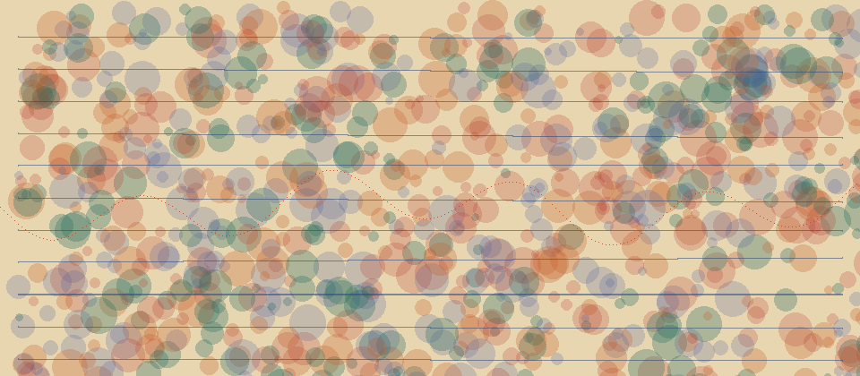

Quakes shown
—
CCT360 · Designing With Data
Live earthquakes from the USGS feed. Click a quake. A small one keeps the page calm. A big one turns it hot, shakes it hard, speeds up the clip, and turns the rumble up.
Last updated: waiting…
Feed: USGS M2.5+ past day
Sound
Minimum magnitude
Focus
Something went wrong talking to the USGS API. Check your connection and refresh the page.
Quakes shown
—
Strongest mag
—
Average mag
—
Deepest (km)
—
Each dot is one quake. Bigger = stronger. Click a dot for details.
Pick a dot. This desk follows that quake.
Clip speed: waiting

Paper photo: waiting
Sound is off until you press the button.
Selected quake
Newest first from the live JSON. Tap one to jump to it on the map.